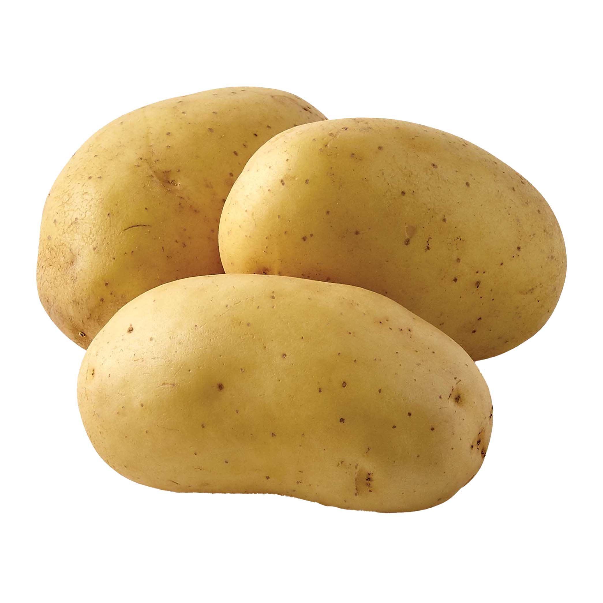

The English word potato comes from Spanish patata (the name used in Spain). The Royal Spanish Academy says the Spanish word is a hybrid of the Taíno batata ('sweet potato') and the Quechua papa ('potato'). The name originally referred to the sweet potato although the two plants are not closely related. The 16th-century English herbalist John Gerard referred to sweet potatoes as common potatoes, and used the terms bastard potatoes and Virginia potatoes for the species we now call potato. In many of the chronicles detailing agriculture and plants, no distinction is made between the two. Potatoes are occasionally referred to as Irish potatoes or white potatoes in the United States, to distinguish them from sweet potatoes. The name spud for a potato comes from the digging of soil (or a hole) prior to the planting of potatoes. The word has an unknown origin and was originally used as a term for a short knife or dagger, probably related to the Latin spad- a word root meaning "sword"; compare Spanish espada, English "spade", and spadroon. It subsequently transferred over to a variety of digging tools. Around 1845, the name transferred to the tuber itself, the first record of this usage being in New Zealand English. The origin of the word spud has erroneously been attributed to an 18th-century activist group dedicated to keeping the potato out of Britain, calling itself the Society for the Prevention of Unwholesome Diet. It was Mario Pei's 1949 The Story of Language that can be blamed for the word's false origin. Pei wrote "the potato, for its part, was in disrepute some centuries ago. Some Englishmen who did not fancy potatoes formed a Society for the Prevention of Unwholesome Diet. The initials of the main words in this title gave rise to spud." Like many. other pre-20th century acronymic origins, this is false, and there is no evidence that a Society for the Prevention of Unwholesome Diet ever existed. At least six languages (Afrikaans, Dutch, French, Hebrew, Persian and some variants of German) are known to use a term for "potato" that translates roughly (or literally) into English as "earth apple" or "ground apple".

These are potato.
History of the Potato
The potato was the first domesticated vegetable in the region of modern-day southern Peru and extreme northwestern Bolivia[1] between 8000 and 5000 BC.[2] Cultivation of potatoes in South America may go back 10,000 years,[3] but tubers do not preserve well in the archaeological record, making identification difficult. The earliest archaeologically verified potato tuber remains have been found at the coastal site of Ancón (central Peru), dating to 2500 BC.[4] Aside from actual remains, the potato is also found in the Peruvian archaeological record as a design influence of ceramic pottery, often in the shape of vessels. The potato has since spread around the world and has become a staple crop in many countries. It arrived in Europe sometime before the end of the 16th century by two different ports of entry: the first in Spain around 1570, and the second via the British Isles between 1588 and 1593. The first written mention of the potato is a receipt for delivery dated 28 November 1567 between Las Palmas de Gran Canaria and Antwerp. In France, at the end of the 16th century, the potato had been introduced to the Franche-Comté, the Vosges of Lorraine and Alsace. By the end of the 18th century it was written in the 1785 edition of Bon Jardinier: "There is no vegetable about which so much has been written and so much enthusiasm has been shown ... The poor should be quite content with this foodstuff."[5] It had widely replaced the turnip and rutabaga by the 19th century. Throughout Europe, the most important new food in the 19th century was the potato, which had three major advantages over other foods for the consumer: its lower rate of spoilage, its bulk (which easily satisfied hunger) and its cheapness. The crop slowly spread across Europe, becoming a major staple by mid-century, especially in Ireland.
Benefits of Potatoes
The fleshy part of the root (potato) is commonly eaten as a vegetable. Potato is also used to make medicine. People use potatoes for diabetes, heart disease, high blood pressure, indigestion (dyspepsia), and other conditions, but there is no good scientific evidence to support these uses. In foods, potato is eaten, used as a source of starch, and fermented into alcohol. Potatoes might limit appetite so people can lose weight. A chemical in the potato peel might also prevent bacteria from attaching to cells. Potatoes are a source of vitamin C, iron, riboflavin, potassium, and carbohydrate. Dehydrated potato flakes are used in retail mashed potato products, as ingredients in snacks, and even as food aid. Potato flour, another dehydrated product, is used by the food industry to bind meat mixtures and thicken gravies and soups. A fine, tasteless powder with “excellent mouth-feel,” potato starch provides higher viscosity than wheat and maize starches, and delivers a more tasty product. It is used as a thickener for sauces and stews, and as a binding agent in cake mixes, dough, biscuits, and ice-cream. In eastern Europe and Scandinavia, crushed potatoes are heated to convert their starch to fermentable sugars that are used in the distillation of alcoholic beverages, such as vodka and akvavit. Potato starch is widely used by the pharmaceutical, textile, wood, and paper industries as an adhesive, binder, texture agent, and filler, and by oil drilling firms to wash boreholes. Potato starch is a 100% biodegradable substitute for polystyrene and other plastics and used, for example, in disposable plates, dishes, and knives. Potato peel and other “zero value” wastes from potato processing are rich in starch that can be liquefied and fermented to produce fuel-grade ethanol. A study in Canada's potato-growing province of New Brunswick estimated that 44,000 tons of processing waste could produce 4-5 million liters of ethanol. In the Russian Federation and other east European countries, as much as half of the potato harvest is used as farm animal feed. Cattle can be fed up to 20 kg of raw potatoes a day, while pigs fatten quickly on a daily diet of 6 kg of boiled potatoes. Chopped up and added to silage, the tubers cook in the heat of fermentation.
Conclusion
In conclusion, A medium 5.3 oz skin on potato has 27 mg of vitamin C per serving, which is 30% of the daily value. Potatoes are considered to be an excellent source of this antioxidant. Vitamin C aids in collagen production—a major component of muscle tissue— and supports iron absorption. A medium 5.3 oz skin on potato has 620 mg of potassium per serving, which is 15% of the daily value and more than a medium-sized banana (422 mg per serving). Potassium is an electrolyte essential for muscle functioning. Potassium is lost in sweat, so it needs to be replenished for optimal performance. A medium 5.3 oz skin on potato has 0.2 mg of vitamin B6 per serving, which is 10% of the daily value and considered to be a good source. Vitamin B6 plays important roles in carbohydrate and protein metabolism.
- Vitamin C
- Potassium
- Vitamin B6
- Several Other Things
- Yes